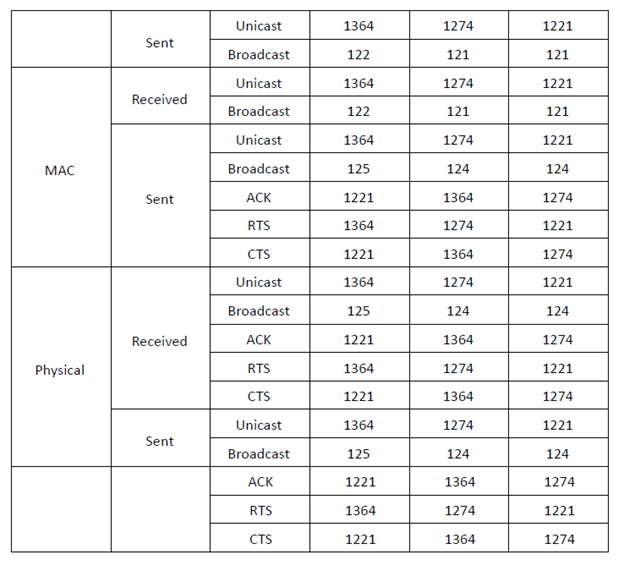

Optimized Network Performance Analysis in Wireless Communication Systems
Introduction
As wireless networks become the backbone of modern connectivity, their performance under varying
channel conditions determines the quality of user experience. This project focuses on a
comparative performance analysis of wireless networks using QualNet simulation
software, targeting both transport and application layer behavior.
The study investigates baseline (no fading) and realistic (fading) environments to
identify performance degradations and explore possible optimizations. The results provide
actionable insights for enhancing network resilience in IoT, mobile broadband, and
critical communication deployments.
Suggested Figure: Network Topology Configuration
Simulation Environment and Setupv
The network was modeled with 18 nodes interconnected through wireless links. Two primary traffic
flows were defined:
-
UDP Traffic-Gen :Simulating high-speed, low-latency transmissions.
-
FTP over TCP :Emulating reliability-focused file transfers.
Two Scenarios:
-
Scenario A (Baseline) :Ideal wireless channel, no fading effects.
-
Scenario B (Variable Channel) :Multipath fading and shadowing introduced to replicate real-world environments.
Both scenarios were configured with detailed MAC layer parameters (CTS/RTS exchanges,
retransmission limits) to capture link-level performance variations.

Suggested Figure: Simulation Parameters Table
Performance Metrics and Observations
Application Layer
-
UDP :
- Scenario A achieved consistently high throughput with negligible delay.
- Scenario B saw a drop in packet delivery ratio due to fading-induced errors and retransmissions.
-
TCP :
- Stable throughput in Scenario A
- In Scenario B, throughput reduction was observed, largely from increased retransmission overhead caused by poor link quality
Suggested Figure : UDP/TCP Throughput Comparison Graph
Transport Layer
-
UDP Packets :Matched application-layer send rates in Scenario A but experienced losses in fading environments.
-
TCP Packets :Maintained integrity in Scenario A, but fading introduced more duplicate acknowledgments and packet retransmissions, increasing latency and reducing effective throughput.
Suggested Figure: TCP Retransmissions Over Time
MAC Layer
-
CTS/RTS Packets :Increased exchange frequency in fading conditions, reflecting repeated transmission attempts.
-
Packet Drops :Noticeably higher in Scenario B, indicating fading's direct impact on channel reliability.
-
ACK Success Rate :Declined under fading, leading to delayed packet confirmations and reduced upper-layer efficiency.
Suggested Figure: MAC Layer Packet Drop Analysis
Application Impact
The insights gained extend beyond simulation:
-
For IoT Systems :Reliability is critical; adaptive retransmission and coding schemes can offset fading losses.
-
For Multimedia Streaming :Maintaining high throughput under fading is essential to avoid buffering and quality drops.
-
For Critical Communications :Low-latency response is non-negotiable, requiring dynamic link adaptation and error control mechanisms.
Suggested Extra Figure: Conceptual Diagram - Performance Optimization Strategies in
Wireless Networks (to be generated for portfolio use).
Conclusion
This project demonstrates that fading has a significant, measurable impact on wireless network
performance across all OSI layers. By comparing ideal and impaired channel scenarios, it
highlights the necessity for adaptive, channel-aware networking techniques.
The study's results can guide network engineers and system designers in building more resilient
communication frameworks, directly applicable to 5G, IoT, and mission-critical deployments.